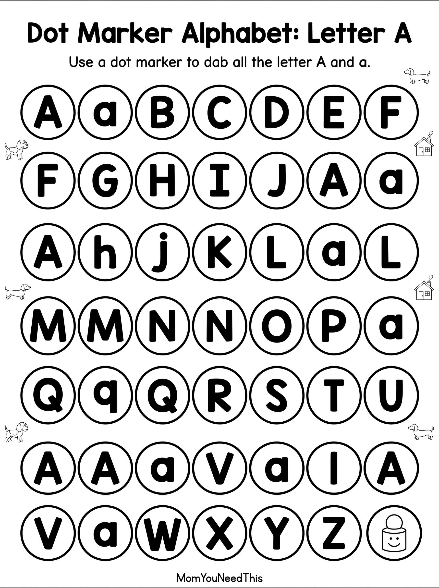
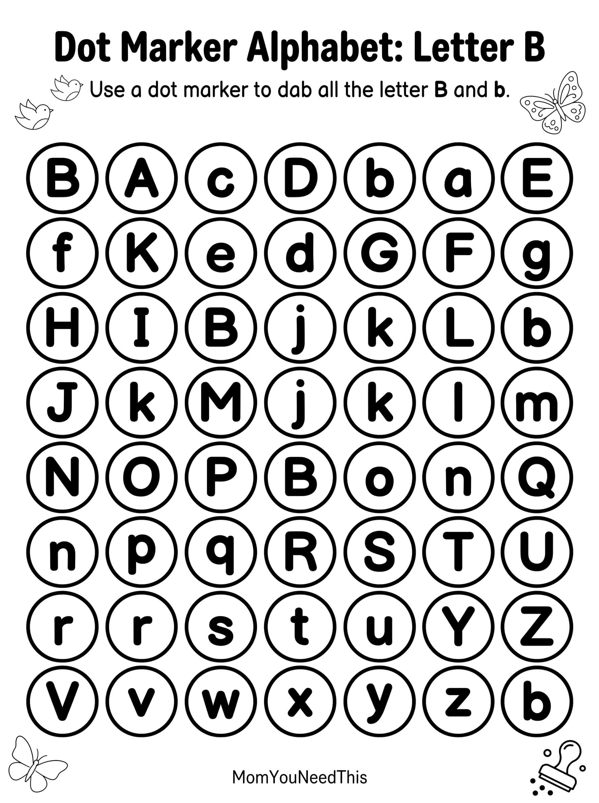
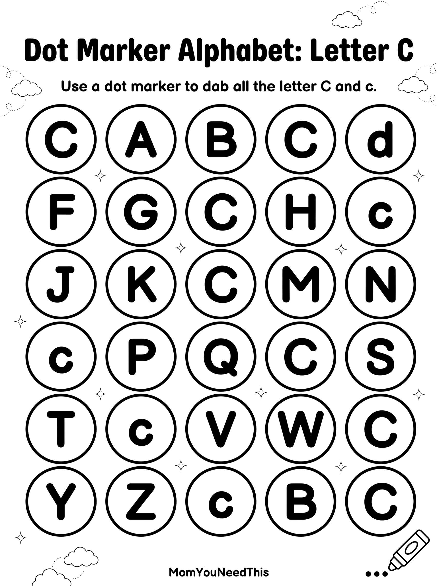

Dot Marker Alphabet Worksheets
Help toddlers and preschoolers learn the alphabet using fun dot marker activities. Kids simply dab each letter while practicing letter recognition, fine motor skills, and early literacy.

Letter A Dot Marker
Practice the letter A using bingo daubers, dot markers, stickers, or fingerprints.
⏬ Download{kind=link}

Letter B Dot Marker
Build letter recognition while filling every B with colorful dot markers.
⏬ Download{kind=link}

Letter C Dot Marker
A fun hands-on alphabet printable perfect for preschool learning.
⏬ Download{kind=link}
Skills Your Child Practices
⭐ More Alphabet Activities
Pair these dot marker worksheets with alphabet coloring pages, tracing worksheets, matching games, and find-the-letter activities.
📚 Letter Recognition ActivitiesMore Free Learning Resources
Browse hundreds of free printable learning activities including alphabet practice, numbers, tracing worksheets, coloring pages, preschool games, and educational printables.
🎁 View All Free Resources